This list is a compilation of steps from the many sources I found during my research. This is my own list that I find to be the most comprehensive. Each source I used to make this list is linked under the sources tab!
This list is a compilation of steps from the many sources I found during my research. This is my own list that I find to be the most comprehensive. Each source I used to make this list is linked under the sources tab!
Step #1
Begin with a solid business idea
This step requires a lot of research and thought. The Valley Small Business Development Center created a list of 10 questions to consider when coming up with your business idea.
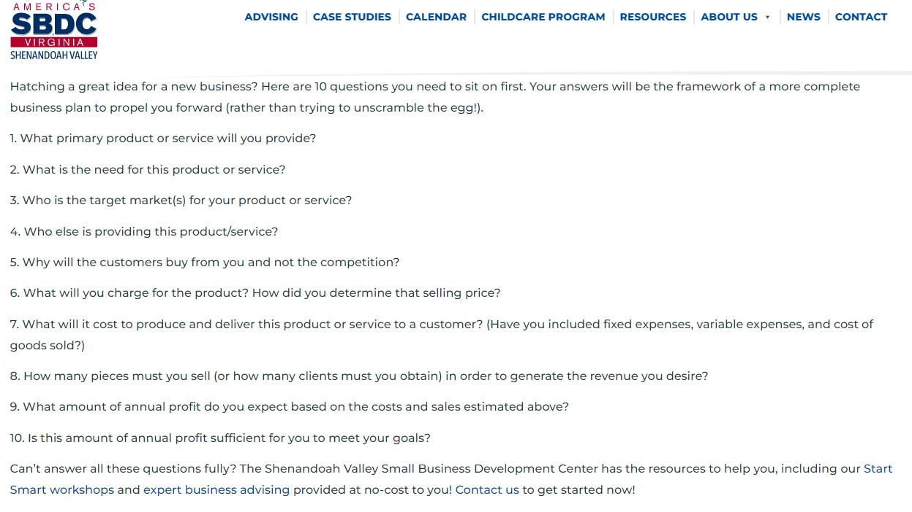
Step #2
Market research
For this step, focus on checking your local and regional markets–where does your business fit within these markets? Also, be sure to research the national market to see the predicted growth of your specific industry.
For example: The graphic design industry is “one of the fastest growing occupations in the United States” I also know that the regional market is competitive–there are many graphic design businesses located in surrounding cities.
Step #3
Write an in-depth business plan
DETAILS DETAILS DETAILS.
A successful business plan is critical to the startup of a new business. In order to create a
successful business plan,
you have to focus on the details. List as many details about the processes and procedures that will
keep your business alive and sustainable.
I have created a video tutorial that
walks you through the creation of a thorough business plan.
In the tutorial, I also follow a business model provided by the Valley SBDC that can be found here.
This is also the step to check for
business name
availabilty and
business naming
conventions and rules.
You can also consider filing for a
fictitious name for
your business, but this costs $10. I did not find this step necessary.
Also, take the time to contact
your local SBDC and local government for requirements
and details that should be added in your business plan. Remember, these resources are here to help
you–the Small Business Development Center in your area can help you through every step of the
startup process.
The business plan for Graphics Gremlin LLC included an image of the business logo and an excel spreadsheet listing startup costs.
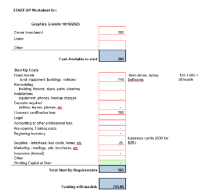Step #4
Research financing options and access to loans
A key piece to starting a small business is making sure that you have access to funds necessary to begin daily procedures. One option is to take out a small business loan with a financial institution. It is up to you to research your options to find one that is the best fit for you.
For Graphics Gremlin LLC, I only needed $125 to cover the basic setup costs ($100 for filing with the SCC and $25 for a local business license). The already had the other assets associated with my graphic design business. Because of this, I did not need to find a source for funding. There is a local source for funding called the Shenandoah Community Capital Fund. They focus on supplying startups and entrepreneurs access to support and resources necessary to grow a business.
Step #5
Assemble a management team
An important step to remember includes assembling your team! Who is going to run daily company procedures? Who is doing the bookkeeping? Are you going to hire an attorney? An accountant? Do you need insurance? Do you have good relations with a banker? It is very important to get your suppliers and distributors in order, as well. While this step does require more research, finding the right team will ensure your business starts from a strong foundation.
The first person I reached out to was a banker–Greg Godsey from Atlantic Union Bank. I decided that I, currently, did not need an accountant or attorney because of the small size of my business. In the future, I anticipate the need for both to keep track of cash flow and contracts. My suppliers will include paper companies in downtown Staunton.
Step #6
Visit your local government center
Earlier, I had recommended contacting your local government center for requirements in your area, but now you will need to visit them. Hopefully, you were able to get information regarding the necessary permits and licenses you need. You will need to ask Community Development for zoning certification and what the cost will be. Also, ask the Commissioner of Revenues Office about business license requirements. While you can find information online, this info can be outdated or be missing information. To avoid unwanted trips to the center, begin by visiting for information. Some example questions include: What papers are needed to file for a zoning permit? What type of zoning permit do I need? What do I need to file for a business license? What is the cost for filing? etc.
For example: I needed to bring verification of my FEIN and zoning permit in order to apply for a
business license.
The first time I went to apply for my zoning permit, I did not have the necessary papers to file!
Their online site was not updated,
and I ended up making multiple trips. I also was uninformed on the different types of zoning
permits–I need a “Home Occupation Type B,”
not Type A like I thought. Thankfully, the government center was very helpful and gave me
information about each type and why I needed Type B
(I do not own the land that I am operating a business on...which required yet another form).
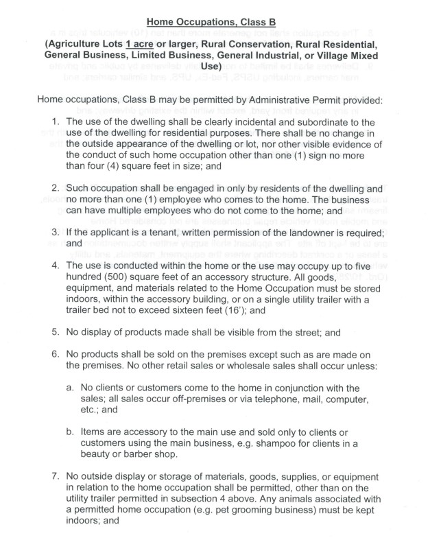
Step #7
File with the State Corporation Commission (SCC)
Finally! This is the official start of your small business. I have created a video tutorial that walks you through how to register with the SCC. It is a complicated online process, but I try to explain each piece in-depth. This is where you will finally register your business name–make sure to look over the business naming rules again! You might run into some problems, but there is an Account Help Request Form that is easy to submit. At the end of this process, you will receive your Articles of Organization (for an LLC) and a Certificate for you business creation.
Personally, I had a lot of trouble setting up my account with the SCC. The Account Help Request Form was very helpful, though, and the process did not take too long after that. I go through the process in more detail in my tutorial. 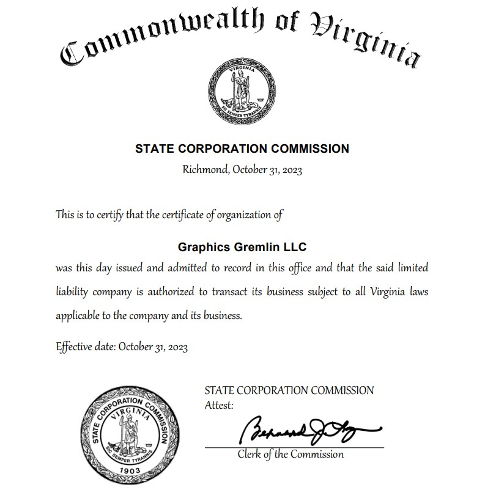
Step #8
Get your Federal Empployer Identification Number (FEIN)
This step requires registering your business with the Internal Revenue Service(IRS). I have another video tutorial focusing on the process of applying for your FEIN. The most important thing to remember is that the process for filing must be completed within 15 minutes. The questions are easy to answer, and I go through them all in my video example. With this unique identifier, you will be able to apply for a business license and file for your business's taxes! You will need to go through the IRS site to file for your FEIN.
When you complete the form, the system will ask if you want receive your FEIN through the postal service or by PDF. I would suggest the PDF because it is immediate. 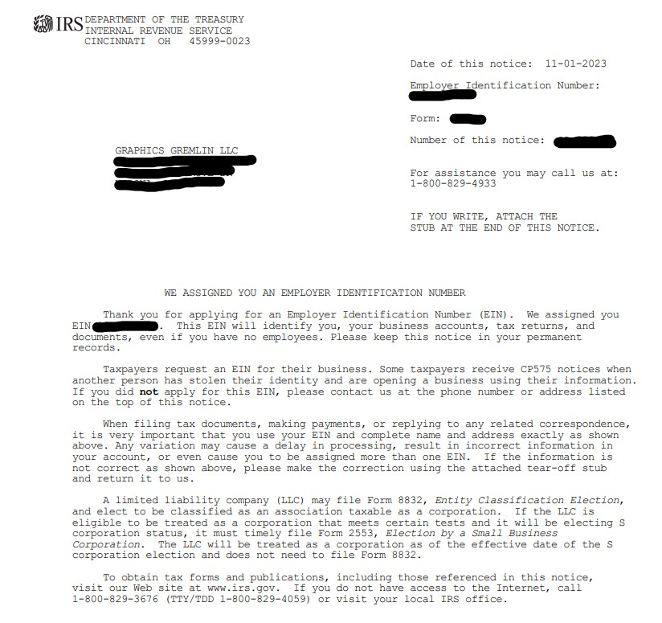
Step #9
Visit Community Development in your locality to apply for necessary zoning permits
Now that you have filed with the SCC and received your FEIN, you can finally apply for your zoning permit! You will need to go in-person to complete the application. Community Development will be able to tell you which zoning permit you should apply for based on your unique business situation. Hopefully, you had visited them beforehand (in step #6) and know which forms to bring and what permit you are filing for.
The application is simple to read and understand. The questions should not take long to answer.
For Graphics Gremlin LLC, I will be working from my home office. In this case, I needed to fill out
a “Home Occupation” Permit.
If you work out of a physical storefront, you will need to file for a different permit. Either way,
Community Development will be able to tell you which form you need to be applying for.
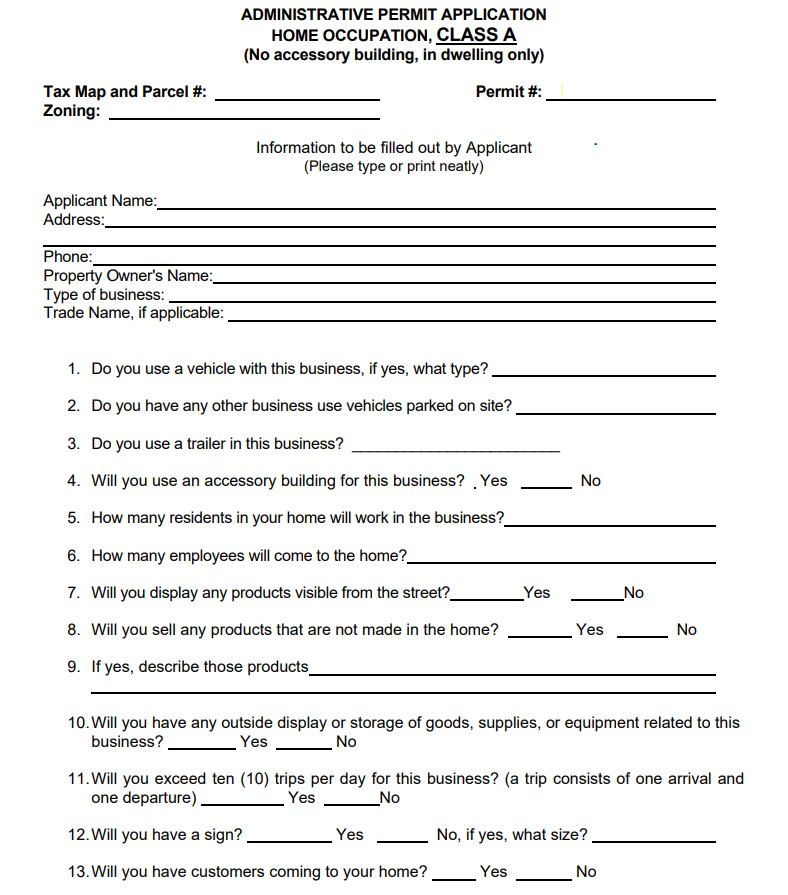
Step #10
File for business license locally with Commissioner of Revenues Office
After checking with your local government center in Step #6, you will know if you need to file for a business license (some states do not require it). You will again need to go in-person to the Commissioner of Revenues Office. Ideally, you will be able to file for your zoning and then walk down the hall to file for your business license all in one day. Make sure to bring your FEIN verification and zoning permit. The process for the business application is also easy.
The business license appliation is very simple and easy to understand.
Since I predicted to make no sales before the end of the year, I set my gross receipts to $100 as a
placeholder.
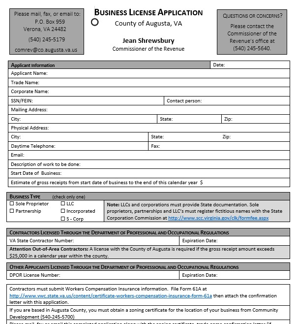
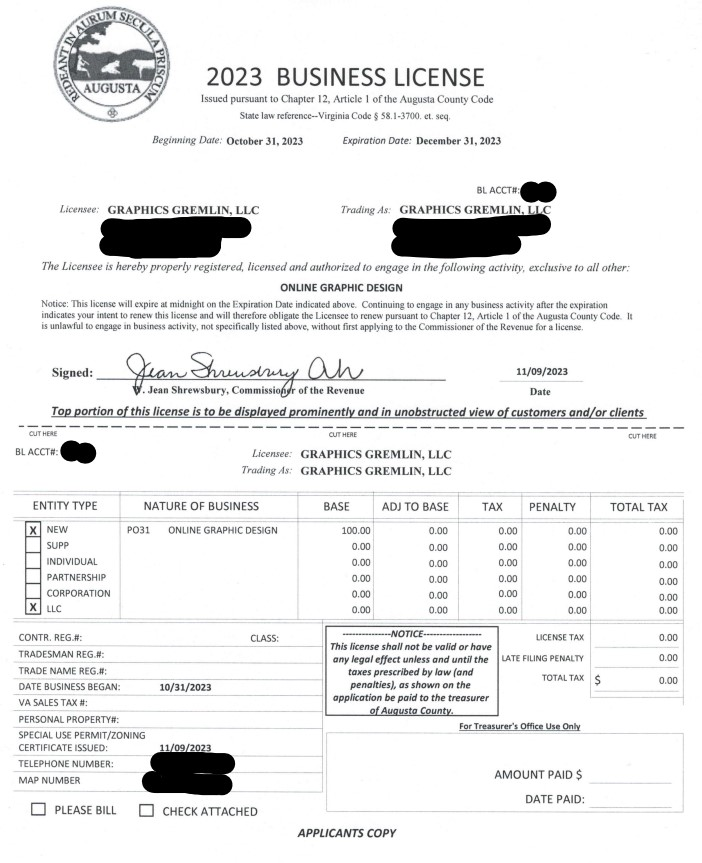
Step #11
Contact your local government center for other licenses and taxes based on localities
Depending on your local government, there may be other licenses and taxes required for your business. For example, if you are opening a restaurant, you need to consider the requirements for food-and-beverage-based permits. In some cases, you might also need to file for certain taxes specific to your industry. This would include the tangible personal property tax and registering for sales taxes.
For my graphic design business, I do not need to worry about sales taxes or excise taxes that may be required for other companies in Augusta County.
Step #12
Open an email account, bank account, and social media accounts for your business!
A separate email account for your business is professional and useful to separate work from home. You will also want to separate your bank accounts into personal and business checking accounts. Use your social media accounts to send customers to your website! I would recommend using popular social media sites such as Instagram and Facebook.
I opened a busines email account: graphics.gremlin@gmail.com and set my business logo as the
profile.
I also posted in both my Instagram and Facebook accounts to bring in customers to my website.
Instagram:
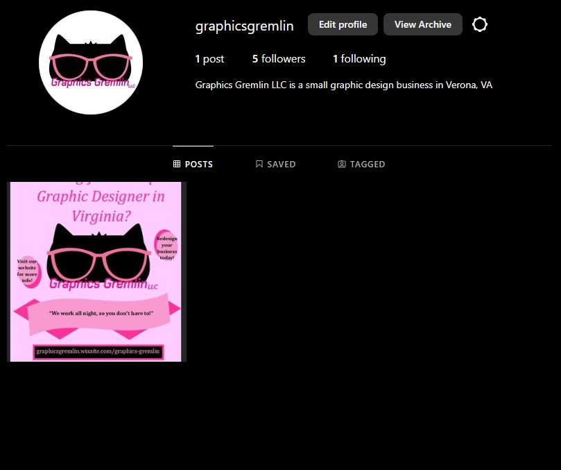
Facebook:
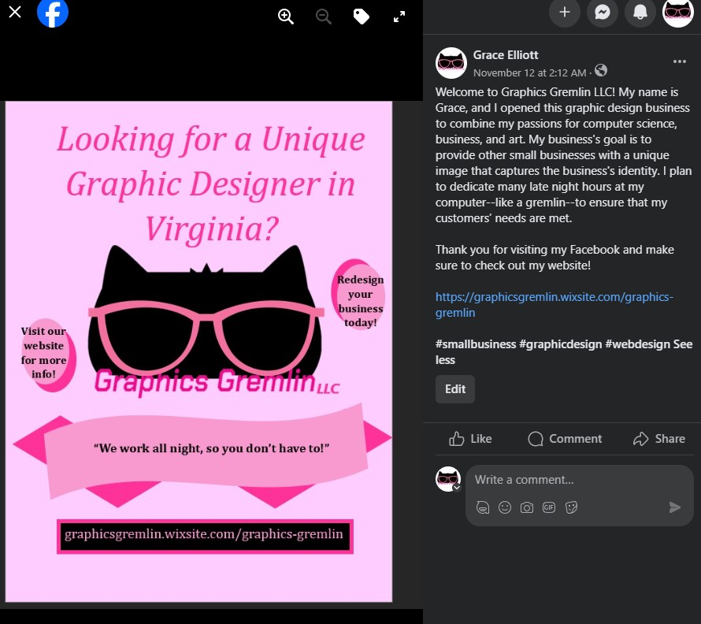
Both platforms are easy to use and can connect you to a wider market.
Step #13
Create a website to represent your small business online!
This website is extremely important for your business's image in 2023. I have created another video tutorial using Wix to help you create a free, inviting website for your small business. You could also hire a graphic designer to design a website for you, but for the very beginning of your startup, I would focus on getting your name out there first.
Wix
is a quick and easy way to create your first website for your business. It is easy to navigate and
put together a cohesive, creative website for FREE.
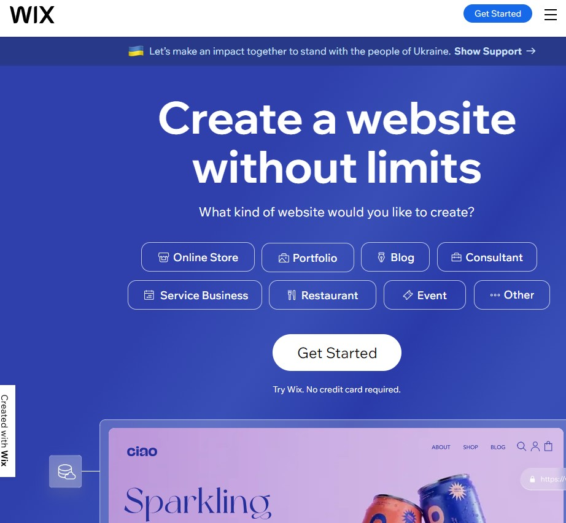
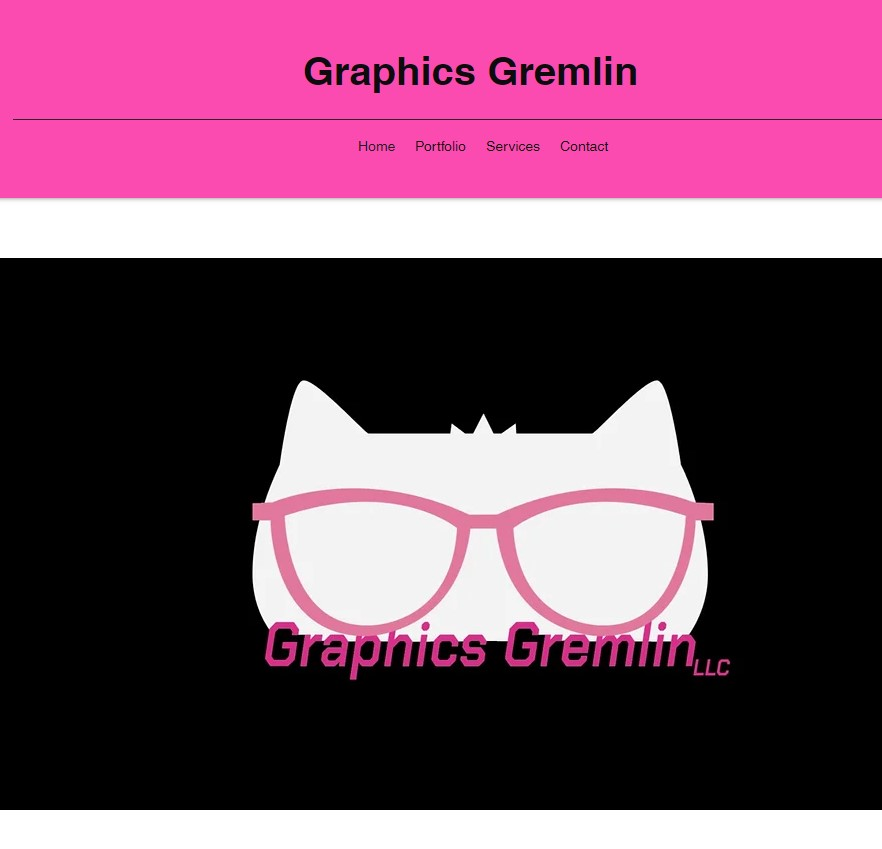
Make sure to keep your website up-to-date!